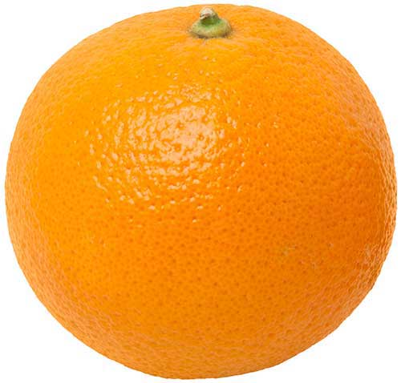

Text Decoration
text-decoration-line
- This is a link that uses
text-decoration-line: none;.
- This is a basic link with
text-decoration-line: underline;.
- This is a span of text that has
text-decoration-line: line-through; applied.
- This is a span of text that has an overline applied,
text-decoration-line: overline;.
- This is vertical text with an underline applied first, and then to see the difference, with an overline applied.
text-decoration-color
- This is a basic link with
text-decoration-color: #dedc4c;
text-decoration-style
- This is a basic link styled with
text-decoration-style: solid;
- This is a basic link styled with
text-decoration-style: dotted;
- This is a basic link styled with
text-decoration-style: dashed;
- This is a basic link styled with
text-decoration-style: double;
- This is a basic link styled with
text-decoration-style: wavy;
text-decoration-skip
- This is a pogiyqklmf  link styled with
text-decoration-skip: none;
- This is a pogiyqklmf link styled with
text-decoration-skip: ink;
- This is a pogiyqklmf link styled with
text-decoration-skip: spaces;
- This is a pogiyqklmf link styled with
text-decoration-skip: edges;
- This is a pogiyqklmf link styled with
text-decoration-skip: object;
- This is a pogiyqklmf link styled with
text-decoration-skip: box-decoration;